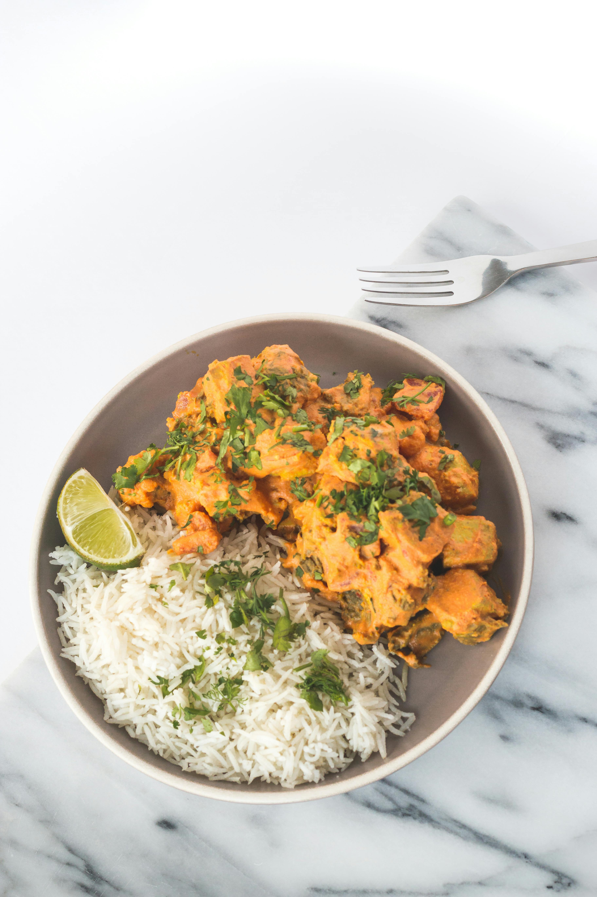

Butter Chicken

The easiest butter chicken recipe you are ever going to make and want to make. It has been cut down heavily on the amount of spices used for ease without sacrificing flavor, and it's keto-friendly!
Ingredients:
- 1 cup Heavy Whipping Cream
- 2 tbsp Butter
- 1.5 tbsp tomato paste
- 2 cloves garlic
- 1/4 medium Onion
- 1.5 tsp turmeric powder
- 1 tsp ground ginger
- 11 tsp Pink Himalayan Salt
- 3/4 tsp chili powderr
- 1/2 tsp ground cinnamon
Instructions:
- Cut the chicken up into bite sized chunks and generously coat them in the turmeric, ginger, salt, chili powder and cinnamon. Set aside in a bowl.
- Heat a skillet to medium heat and add the butter. As the butter melts dice the onion and garlic and add it to the pan. Cook for 2-3 minutes until the onions are translucent and fragrant.
- Increase the pan heat to medium-high and add the chicken. Cook it almost entirely through – the outside should be white and this will take about 3-5 minutes.
- Once the chicken looks almost fully cooked add in the heavy whipping cream and tomato paste. Using a spatula mix in the tomato paste so it runs smooth through the heavy whipping cream. It should be an orange color at this point. Turn the heat to medium-low and cover with a lid for 5-7 minutes.
- emove lid and combine. The chicken is fully cooked and you should be able to eat it. However, if you like a thicker curry sauce allow it to reduce with the lid off until it reaches the consistency you like.
Home